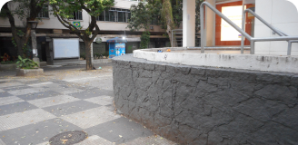
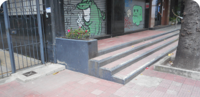
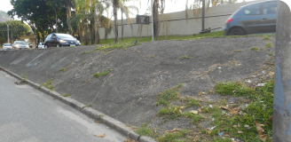
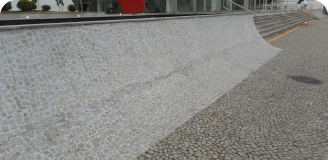

Picos
Gaps Mais conhecidos


Luiza Sampaio
Gap com mureta da Voluntários
- R. Voluntários da Pátria, 1780 - Santana, São Paulo - SP, 02010-500

André Soares
Rampa da entrada avenida Rebouças
- Av. Rebouças, 2166 - Pinheiros, São Paulo - SP, 05402-300

Júlia Fonseca
Wallride de pedra portuguesa da FGP
- Rua Prof. Massud José Nachef, 2855 – Parque da Colina